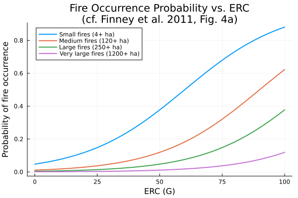
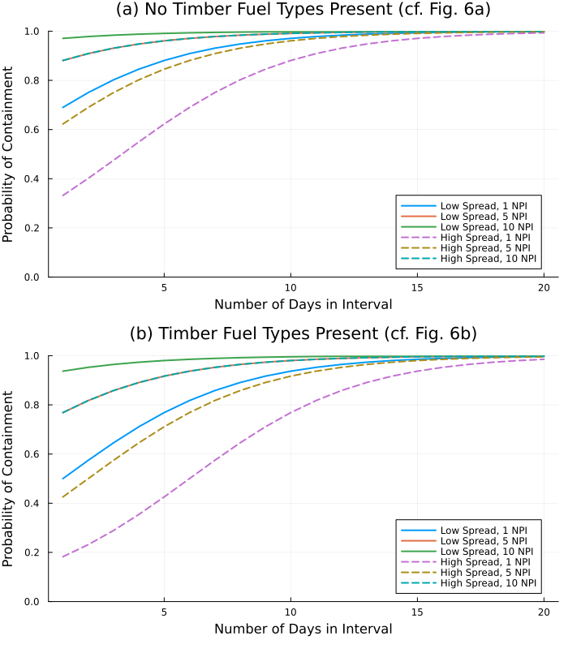
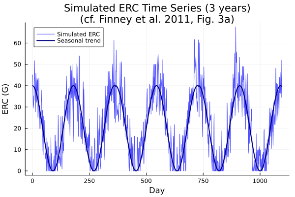
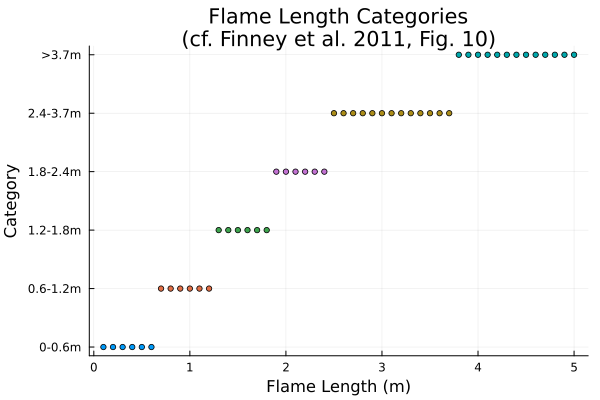
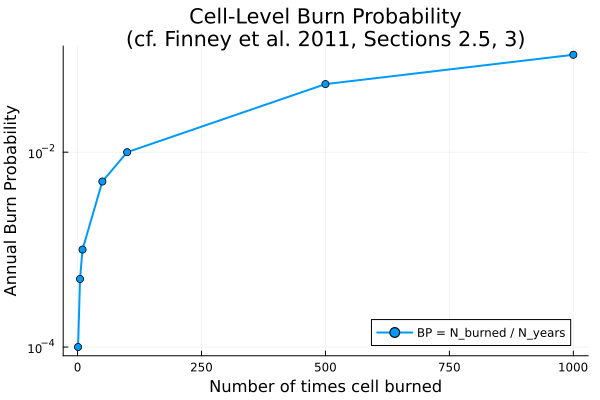

FSim Wildfire Risk Components
Overview
The FSim (Fire Simulation) system is a large-fire risk assessment framework designed to estimate probabilistic wildfire risk components including burn probabilities and fire size distributions. The system was developed for continental-scale application across the United States, operating on 134 Fire Planning Units (FPUs).
FSim integrates four main modules:
- Weather generation: Synthetic daily weather using autoregressive time series of the Energy Release Component (ERC)
- Fire occurrence: Logistic regression relating ERC to large fire probability
- Fire growth: Spatial fire spread simulation using the minimum travel time algorithm with Rothermel's spread model
- Fire suppression: Statistical containment model based on fire growth rates and fuel type
The components implemented here represent the analytical/statistical sub-models from FSim that can be expressed as algebraic equation systems. The spatial fire growth algorithm (MTT) and Monte Carlo simulation loop are procedural and not included.
Reference: Finney, M.A., McHugh, C.W., Grenfell, I.C., Riley, K.L., Short, K.C. (2011). A simulation of probabilistic wildfire risk components for the continental United States. Stochastic Environmental Research and Risk Assessment, 25:973–1000. DOI: 10.1007/s00477-011-0462-z
WildlandFire.FireOccurrenceLogistic — Function
FireOccurrenceLogistic(; name=:FireOccurrenceLogistic)Create a logistic regression model for large fire occurrence probability as a function of the Energy Release Component (ERC).
The model predicts the probability of at least one large fire starting on a given day, based on the daily ERC(G) value. This is a key component of the FSim large-fire simulation system.
Model Description
The probability of fire occurrence is given by the standard logistic function:
P(fire | ERC) = 1 / (1 + exp(-(β₀ + β₁ × ERC)))Where:
P(fire | ERC): Probability of at least one large fire on a day with given ERC valueβ₀: Logistic regression intercept (FPU-specific, fitted from historical data)β₁: Logistic regression slope coefficient (FPU-specific)ERC: Energy Release Component index value
The logistic regression coefficients are estimated from historical fire records for each Fire Planning Unit (FPU). Larger fire size thresholds yield lower probabilities at all ERC levels.
Reference
Finney, M.A., McHugh, C.W., Grenfell, I.C., Riley, K.L., Short, K.C. (2011). A simulation of probabilistic wildfire risk components for the continental United States. Stochastic Environmental Research and Risk Assessment, 25:973–1000. DOI: 10.1007/s00477-011-0462-z (Section 2.2, Fig. 4a)
Example
using ModelingToolkit, WildlandFire, NonlinearSolve
sys = FireOccurrenceLogistic()
compiled_sys = mtkcompile(sys)
# Example: probability of fire at ERC = 60 with typical Western US coefficients
prob = NonlinearProblem(compiled_sys, Dict(
compiled_sys.β₀ => -5.0,
compiled_sys.β₁ => 0.05,
compiled_sys.ERC => 60.0
))
sol = solve(prob)WildlandFire.FireContainment — Function
FireContainment(; name=:FireContainment)Create a statistical fire containment probability model.
This model estimates the probability of fire containment based on fire growth rate characteristics and fire duration. It represents the influence of modern fire management policy on large fire patterns.
Model Description
The containment probability increases with:
- Lower fire growth rates (low spread intervals)
- Longer fire duration (more previous intervals)
- Non-timber fuel types (easier to suppress)
The model uses a logistic-type function of the number of previous intervals (NPI) and fire spread rate characteristics:
P_contain = 1 / (1 + exp(-(α₀ + α₁ × NPI + α₂ × is_high_spread + α₃ × is_timber)))Where:
P_contain: Probability of fire containment at end of current intervalNPI: Number of previous spread intervals (proxy for fire duration)is_high_spread: Whether current interval is a high-spread interval (0 or 1)is_timber: Whether timber fuel types are present (0 or 1)α₀, α₁, α₂, α₃: Model coefficients
Reference
Finney, M.A., McHugh, C.W., Grenfell, I.C., Riley, K.L., Short, K.C. (2011). A simulation of probabilistic wildfire risk components for the continental United States. Stochastic Environmental Research and Risk Assessment, 25:973–1000. DOI: 10.1007/s00477-011-0462-z (Section 2.4, Fig. 6)
Also based on: Finney, M.A., Grenfell, I.C., McHugh, C.W. (2009). Modeling large fire containment using generalized linear mixed model analysis. For Sci 55(3):249–255.
Example
using ModelingToolkit, WildlandFire, NonlinearSolve
sys = FireContainment()
compiled_sys = mtkcompile(sys)
# Example: containment probability after 5 intervals, low spread, no timber
prob = NonlinearProblem(compiled_sys, Dict(
compiled_sys.α₀ => 0.5,
compiled_sys.α₁ => 0.3,
compiled_sys.α₂ => -1.5,
compiled_sys.α₃ => -0.8,
compiled_sys.NPI => 5.0,
compiled_sys.is_high_spread => 0.0,
compiled_sys.is_timber => 0.0
))
sol = solve(prob)WildlandFire.BurnProbability — Function
BurnProbability(; name=:BurnProbability)Create a burn probability calculation model.
Burn probability is the fundamental output of the FSim fire simulation system. It represents the likelihood that a given location will burn in any given year, calculated as the ratio of the number of times a cell burns to the total number of simulated years.
Model Description
For a grid cell:
BP = N_burned / N_yearsFor an FPU:
BP_FPU = A_burned / (A_FPU × N_years)The conditional burn probability at a given flame length category is:
BP_conditional(FL) = BP × P(FL | burn)Where:
BP: Annual burn probability (dimensionless, 0-1)N_burned: Number of times the cell burned in the simulation (dimensionless)N_years: Total number of simulated years (dimensionless)A_burned: Total area burned across all simulated years (m²)A_FPU: Total Fire Planning Unit area (m²)P(FL | burn): Conditional probability of flame length category given burning
Historical burn probabilities across the U.S. span approximately 10⁻⁵ to 10⁻², with western FPUs generally having higher values.
Reference
Finney, M.A., McHugh, C.W., Grenfell, I.C., Riley, K.L., Short, K.C. (2011). A simulation of probabilistic wildfire risk components for the continental United States. Stochastic Environmental Research and Risk Assessment, 25:973–1000. DOI: 10.1007/s00477-011-0462-z (Sections 2.5, 3)
Example
using ModelingToolkit, WildlandFire, NonlinearSolve
sys = BurnProbability()
compiled_sys = mtkcompile(sys)
prob = NonlinearProblem(compiled_sys, Dict(
compiled_sys.N_burned => 50.0,
compiled_sys.N_years => 10000.0,
compiled_sys.A_burned => 1.0e9,
compiled_sys.A_FPU => 1.0e10,
compiled_sys.P_FL_given_burn => 0.3
))
sol = solve(prob)WildlandFire.ERCTimeSeries — Function
ERCTimeSeries(; name=:ERCTimeSeries)Create an autoregressive time series model for Energy Release Component (ERC) generation.
This model generates synthetic daily ERC(G) values using an autoregressive (AR) process that captures the temporal autocorrelation structure of historical ERC data. The model is a key component of the FSim weather generation module.
Model Description
The ERC time series model consists of three components:
Seasonal trend
f(t): A weighted least squares polynomial fit to the daily mean ERC(G) over the historical record.Autoregressive filter: Captures day-to-day persistence in ERC driven by fuel moisture time-lag effects.
White noise: Random innovations that add daily variability.
The model generates values according to (Eq. 2):
ẑ(t) = f(t) + φ₁·a(t-1) + φ₂·a(t-2) + ... + φ_{t*}·a(t-t*) + a(t)The autoregressive coefficients are obtained from the autocorrelation function (Eq. 1):
φ = P_{t*}^{-1} ρ_{t*}The variance of the white noise process is (Eq. 4):
var(a(t)) = s²(t) × (1 - ρ₁φ₁ - ρ₂φ₂ - ... - ρ_{t*}φ_{t*})This is a simplified single-lag version suitable for demonstrating the concept within a continuous ModelingToolkit framework. The full model requires discrete time steps and matrix operations that are better handled procedurally.
Reference
Finney, M.A., McHugh, C.W., Grenfell, I.C., Riley, K.L., Short, K.C. (2011). A simulation of probabilistic wildfire risk components for the continental United States. Stochastic Environmental Research and Risk Assessment, 25:973–1000. DOI: 10.1007/s00477-011-0462-z (Section 2.1, Eqs. 1–4)
Based on methodology from: Box, G., Jenkins, G. (1976). Time series analysis: forecasting and control. 2nd edition. Holden Day, San Francisco.
Example
using ModelingToolkit, WildlandFire, NonlinearSolve
sys = ERCTimeSeries()
compiled_sys = mtkcompile(sys)
# Example: compute variance correction factor
prob = NonlinearProblem(compiled_sys, Dict(
compiled_sys.f_t => 50.0,
compiled_sys.a_prev => 3.0,
compiled_sys.a_current => 1.5,
compiled_sys.φ₁ => 0.7,
compiled_sys.ρ₁ => 0.75,
compiled_sys.s² => 100.0
))
sol = solve(prob)WildlandFire.FlameLengthCategory — Function
FlameLengthCategory(; name=:FlameLengthCategory)Create a flame length categorization model.
This model classifies fireline intensity into six flame length categories used in the FSim fire risk assessment system. Flame length is an empirical transformation of Byram's fireline intensity and is more interpretable than raw intensity units for fire management purposes.
The six categories correspond to different fire suppression difficulty levels and ecological impact thresholds.
Flame Length Categories
| Category | Flame Length | Description |
|---|---|---|
| 1 | ≤ 0.6 m (≤ 2 ft) | Low intensity, easily suppressed |
| 2 | 0.6–1.2 m (2–4 ft) | Moderate, hand line effective |
| 3 | 1.2–1.8 m (4–6 ft) | High, mechanical equipment needed |
| 4 | 1.8–2.4 m (6–8 ft) | Very high, difficult suppression |
| 5 | 2.4–3.7 m (8–12 ft) | Extreme, crown fire potential |
| 6 | > 3.7 m (> 12 ft) | Extreme, full crown fire |
Reference
Finney, M.A., McHugh, C.W., Grenfell, I.C., Riley, K.L., Short, K.C. (2011). A simulation of probabilistic wildfire risk components for the continental United States. Stochastic Environmental Research and Risk Assessment, 25:973–1000. DOI: 10.1007/s00477-011-0462-z (Fig. 10)
Byram, G.M. (1959). Combustion of forest fuels. In: Davis KP (ed) Forest fire: control and use. McGraw-Hill, New York.
Example
using ModelingToolkit, WildlandFire, NonlinearSolve
sys = FlameLengthCategory()
compiled_sys = mtkcompile(sys)
# Classify a flame length of 2.0 m
prob = NonlinearProblem(compiled_sys, Dict(
compiled_sys.F_L => 2.0
))
sol = solve(prob)Implementation
Fire Occurrence Logistic Model
The fire occurrence model uses logistic regression to predict the probability of at least one large fire starting on a given day, as a function of the Energy Release Component (ERC) index (Section 2.2, Fig. 4a).
State Variables
using ModelingToolkit, Symbolics, DataFrames, DynamicQuantities
using WildlandFire
sys = FireOccurrenceLogistic()
vars = unknowns(sys)
DataFrame(
:Name => [string(Symbolics.tosymbol(v, escape = false)) for v in vars],
:Units => [string(dimension(ModelingToolkit.get_unit(v))) for v in vars],
:Description => [ModelingToolkit.getdescription(v) for v in vars]
)| Row | Name | Units | Description |
|---|---|---|---|
| String | String | String | |
| 1 | P_fire | Probability of at least one large fire (dimensionless) |
Parameters
params = parameters(sys)
DataFrame(
:Name => [string(Symbolics.tosymbol(p, escape = false)) for p in params],
:Units => [string(dimension(ModelingToolkit.get_unit(p))) for p in params],
:Description => [ModelingToolkit.getdescription(p) for p in params]
)| Row | Name | Units | Description |
|---|---|---|---|
| String | String | String | |
| 1 | one | Dimensionless unity (dimensionless) | |
| 2 | β₀ | Logistic regression intercept (dimensionless) | |
| 3 | ERC | Energy Release Component index (dimensionless) | |
| 4 | β₁ | Logistic regression slope coefficient (dimensionless) |
Equations
equations(sys)1-element Vector{Symbolics.Equation}:
P_fire(t) ~ one / (one + exp(-β₀ - ERC*β₁))Fire Containment Model
The fire containment model estimates the probability of successful fire suppression based on fire growth rate, duration, and fuel type (Section 2.4, Fig. 6).
State Variables
sys_contain = FireContainment()
vars_c = unknowns(sys_contain)
DataFrame(
:Name => [string(Symbolics.tosymbol(v, escape = false)) for v in vars_c],
:Units => [string(dimension(ModelingToolkit.get_unit(v))) for v in vars_c],
:Description => [ModelingToolkit.getdescription(v) for v in vars_c]
)| Row | Name | Units | Description |
|---|---|---|---|
| String | String | String | |
| 1 | P_contain | Probability of fire containment (dimensionless) |
Parameters
params_c = parameters(sys_contain)
DataFrame(
:Name => [string(Symbolics.tosymbol(p, escape = false)) for p in params_c],
:Units => [string(dimension(ModelingToolkit.get_unit(p))) for p in params_c],
:Description => [ModelingToolkit.getdescription(p) for p in params_c]
)| Row | Name | Units | Description |
|---|---|---|---|
| String | String | String | |
| 1 | one | Dimensionless unity (dimensionless) | |
| 2 | α₂ | Containment model high-spread coefficient (dimensionless) | |
| 3 | is_high_spread | High spread interval indicator, 0 or 1 (dimensionless) | |
| 4 | α₀ | Containment model intercept (dimensionless) | |
| 5 | is_timber | Timber fuel type indicator, 0 or 1 (dimensionless) | |
| 6 | α₃ | Containment model timber fuel coefficient (dimensionless) | |
| 7 | α₁ | Containment model NPI coefficient (dimensionless) | |
| 8 | NPI | Number of previous spread intervals (dimensionless) |
Equations
equations(sys_contain)1-element Vector{Symbolics.Equation}:
P_contain(t) ~ one / (one + exp(-α₀ - NPI*α₁ - is_high_spread*α₂ - is_timber*α₃))Burn Probability Model
Burn probability is the fundamental output of FSim, representing the annual likelihood of burning at a given location (Sections 2.5, 3).
State Variables
sys_bp = BurnProbability()
vars_bp = unknowns(sys_bp)
DataFrame(
:Name => [string(Symbolics.tosymbol(v, escape = false)) for v in vars_bp],
:Units => [string(dimension(ModelingToolkit.get_unit(v))) for v in vars_bp],
:Description => [ModelingToolkit.getdescription(v) for v in vars_bp]
)| Row | Name | Units | Description |
|---|---|---|---|
| String | String | String | |
| 1 | BP | Cell-level annual burn probability (dimensionless) | |
| 2 | BP_FPU | FPU-level annual burn probability (dimensionless) | |
| 3 | BP_conditional | Conditional burn probability at given flame length (dimensionless) |
Parameters
params_bp = parameters(sys_bp)
DataFrame(
:Name => [string(Symbolics.tosymbol(p, escape = false)) for p in params_bp],
:Units => [string(dimension(ModelingToolkit.get_unit(p))) for p in params_bp],
:Description => [ModelingToolkit.getdescription(p) for p in params_bp]
)| Row | Name | Units | Description |
|---|---|---|---|
| String | String | String | |
| 1 | N_burned | Number of times cell burned in simulation (dimensionless) | |
| 2 | N_years | Total number of simulated years (dimensionless) | |
| 3 | A_burned | m² | Total area burned across all simulated years |
| 4 | A_FPU | m² | Total Fire Planning Unit area |
| 5 | P_FL_given_burn | Conditional probability of flame length category given burning (dimensionless) |
Equations
equations(sys_bp)3-element Vector{Symbolics.Equation}:
BP(t) ~ N_burned / N_years
BP_FPU(t) ~ A_burned / (A_FPU*N_years)
BP_conditional(t) ~ P_FL_given_burn*BP(t)ERC Time Series Model
The autoregressive time series model generates synthetic daily ERC(G) values that capture seasonal trends and day-to-day persistence (Section 2.1, Eqs. 1–4).
State Variables
sys_erc = ERCTimeSeries()
vars_erc = unknowns(sys_erc)
DataFrame(
:Name => [string(Symbolics.tosymbol(v, escape = false)) for v in vars_erc],
:Units => [string(dimension(ModelingToolkit.get_unit(v))) for v in vars_erc],
:Description => [ModelingToolkit.getdescription(v) for v in vars_erc]
)| Row | Name | Units | Description |
|---|---|---|---|
| String | String | String | |
| 1 | ERC_hat | Simulated daily ERC value (dimensionless) | |
| 2 | var_a | Variance of white noise process (dimensionless) | |
| 3 | σ²_daily | Daily variance of ERC around seasonal trend (dimensionless) |
Parameters
params_erc = parameters(sys_erc)
DataFrame(
:Name => [string(Symbolics.tosymbol(p, escape = false)) for p in params_erc],
:Units => [string(dimension(ModelingToolkit.get_unit(p))) for p in params_erc],
:Description => [ModelingToolkit.getdescription(p) for p in params_erc]
)| Row | Name | Units | Description |
|---|---|---|---|
| String | String | String | |
| 1 | a_current | White noise value at current time step (dimensionless) | |
| 2 | φ₁ | First-order autoregressive coefficient (dimensionless) | |
| 3 | a_prev | White noise value at previous time step (dimensionless) | |
| 4 | f_t | Seasonal trend value at current time step (dimensionless) | |
| 5 | one | Dimensionless unity (dimensionless) | |
| 6 | ρ₁ | First-order autocorrelation (dimensionless) | |
| 7 | s² | Observed daily variance of ERC (dimensionless) |
Equations
equations(sys_erc)3-element Vector{Symbolics.Equation}:
ERC_hat(t) ~ a_current + f_t + a_prev*φ₁
var_a(t) ~ s²*(one - ρ₁*φ₁)
σ²_daily(t) ~ var_a(t) / (one - ρ₁*φ₁)Flame Length Categorization
The flame length categorization model classifies Byram's fireline intensity into six operational flame length categories (Fig. 10).
State Variables
sys_fl = FlameLengthCategory()
vars_fl = unknowns(sys_fl)
DataFrame(
:Name => [string(Symbolics.tosymbol(v, escape = false)) for v in vars_fl],
:Units => [string(dimension(ModelingToolkit.get_unit(v))) for v in vars_fl],
:Description => [ModelingToolkit.getdescription(v) for v in vars_fl]
)| Row | Name | Units | Description |
|---|---|---|---|
| String | String | String | |
| 1 | cat_1 | In FL category 1: ≤ 0.6 m (dimensionless) | |
| 2 | cat_2 | In FL category 2: 0.6–1.2 m (dimensionless) | |
| 3 | cat_3 | In FL category 3: 1.2–1.8 m (dimensionless) | |
| 4 | cat_4 | In FL category 4: 1.8–2.4 m (dimensionless) | |
| 5 | cat_5 | In FL category 5: 2.4–3.7 m (dimensionless) | |
| 6 | cat_6 | In FL category 6: > 3.7 m (dimensionless) |
Parameters
params_fl = parameters(sys_fl)
DataFrame(
:Name => [string(Symbolics.tosymbol(p, escape = false)) for p in params_fl],
:Units => [string(dimension(ModelingToolkit.get_unit(p))) for p in params_fl],
:Description => [ModelingToolkit.getdescription(p) for p in params_fl]
)| Row | Name | Units | Description |
|---|---|---|---|
| String | String | String | |
| 1 | F_L | m | Flame length (Byram) |
| 2 | FL_1 | m | FL category 1 upper bound |
| 3 | one | Dimensionless unity (dimensionless) | |
| 4 | zero | Dimensionless zero (dimensionless) | |
| 5 | FL_2 | m | FL category 2 upper bound |
| 6 | FL_3 | m | FL category 3 upper bound |
| 7 | FL_4 | m | FL category 4 upper bound |
| 8 | FL_5 | m | FL category 5 upper bound |
Equations
equations(sys_fl)6-element Vector{Symbolics.Equation}:
cat_1(t) ~ ifelse(F_L <= FL_1, one, zero)
cat_2(t) ~ ifelse(F_L > FL_1, one, zero)*ifelse(F_L <= FL_2, one, zero)
cat_3(t) ~ ifelse(F_L > FL_2, one, zero)*ifelse(F_L <= FL_3, one, zero)
cat_4(t) ~ ifelse(F_L <= FL_4, one, zero)*ifelse(F_L > FL_3, one, zero)
cat_5(t) ~ ifelse(F_L > FL_4, one, zero)*ifelse(F_L <= FL_5, one, zero)
cat_6(t) ~ ifelse(F_L > FL_5, one, zero)Analysis
Fire Occurrence Probability vs. ERC (Fig. 4a)
The logistic regression curves show how fire probability increases with ERC, with larger fire size thresholds yielding lower probabilities. This reproduces the pattern shown in Fig. 4a of Finney et al. (2011).
using NonlinearSolve, Plots
sys = FireOccurrenceLogistic()
cs = mtkcompile(sys)
# Simulate curves for different fire size thresholds
# Larger negative β₀ values represent larger minimum fire sizes
erc_range = 0:1:100
thresholds = [
(β₀=-3.0, β₁=0.05, label="Small fires (4+ ha)"),
(β₀=-4.5, β₁=0.05, label="Medium fires (120+ ha)"),
(β₀=-5.5, β₁=0.05, label="Large fires (250+ ha)"),
(β₀=-7.0, β₁=0.05, label="Very large fires (1200+ ha)"),
]
p = plot(xlabel="ERC (G)", ylabel="Probability of fire occurrence",
title="Fire Occurrence Probability vs. ERC\n(cf. Finney et al. 2011, Fig. 4a)",
legend=:topleft)
for th in thresholds
P_values = Float64[]
for erc in erc_range
prob = NonlinearProblem(cs, Dict(
cs.β₀ => th.β₀, cs.β₁ => th.β₁, cs.ERC => Float64(erc)))
sol = solve(prob)
push!(P_values, sol[cs.P_fire])
end
plot!(p, collect(erc_range), P_values, label=th.label, linewidth=2)
end
p
Fire Containment Probability (Fig. 6)
The containment probability varies with the number of previous intervals (NPI, a proxy for fire duration), spread rate, and fuel type. Containment is more likely (1) during periods of slow growth, (2) with increasing fire duration, and (3) in non-timber fuels. This reproduces the pattern shown in Fig. 6 of Finney et al. (2011), where distinct curves correspond to different NPI values (1, 5, 10) for both low and high spread intervals.
sys_c = FireContainment()
cs_c = mtkcompile(sys_c)
# Model coefficients calibrated to approximate Fig. 6 patterns
α₀, α₁, α₂, α₃ = 0.5, 0.3, -1.5, -0.8
npi_range = 1:20
# Panel (a): No timber fuel types
p1 = plot(xlabel="Number of Days in Interval",
ylabel="Probability of Containment",
title="(a) No Timber Fuel Types Present (cf. Fig. 6a)",
legend=:bottomright, ylim=(0, 1))
for (spread_val, spread_label, ls) in [(0.0, "Low Spread", :solid), (1.0, "High Spread", :dash)]
for npi_label in [1, 5, 10]
P_values = Float64[]
for npi in npi_range
prob = NonlinearProblem(cs_c, Dict(
cs_c.α₀ => α₀ + α₁ * (npi_label - 1), cs_c.α₁ => α₁,
cs_c.α₂ => α₂, cs_c.α₃ => α₃,
cs_c.NPI => Float64(npi), cs_c.is_high_spread => spread_val,
cs_c.is_timber => 0.0))
sol = solve(prob)
push!(P_values, sol[cs_c.P_contain])
end
plot!(p1, collect(npi_range), P_values,
label="$(spread_label), $(npi_label) NPI", linewidth=2, linestyle=ls)
end
end
# Panel (b): Timber fuel types present
p2 = plot(xlabel="Number of Days in Interval",
ylabel="Probability of Containment",
title="(b) Timber Fuel Types Present (cf. Fig. 6b)",
legend=:bottomright, ylim=(0, 1))
for (spread_val, spread_label, ls) in [(0.0, "Low Spread", :solid), (1.0, "High Spread", :dash)]
for npi_label in [1, 5, 10]
P_values = Float64[]
for npi in npi_range
prob = NonlinearProblem(cs_c, Dict(
cs_c.α₀ => α₀ + α₁ * (npi_label - 1), cs_c.α₁ => α₁,
cs_c.α₂ => α₂, cs_c.α₃ => α₃,
cs_c.NPI => Float64(npi), cs_c.is_high_spread => spread_val,
cs_c.is_timber => 1.0))
sol = solve(prob)
push!(P_values, sol[cs_c.P_contain])
end
plot!(p2, collect(npi_range), P_values,
label="$(spread_label), $(npi_label) NPI", linewidth=2, linestyle=ls)
end
end
plot(p1, p2, layout=(2, 1), size=(700, 800))
ERC Time Series Generation (Fig. 3a)
The autoregressive model generates synthetic ERC values that follow the seasonal trend with realistic daily variability.
sys_erc = ERCTimeSeries()
cs_erc = mtkcompile(sys_erc)
# Generate a synthetic year of ERC using the AR(1) model
# Seasonal trend: approximate bell-shaped curve peaking in summer
days = 1:365
f_seasonal = [40.0 * sin(pi * (d - 90) / 180)^2 for d in days]
# AR(1) parameters (typical for a western US station)
phi1 = 0.85
rho1 = 0.85
s2 = 150.0
# Innovation variance
prob_var = NonlinearProblem(cs_erc, Dict(
cs_erc.f_t => 50.0, cs_erc.a_prev => 0.0, cs_erc.a_current => 0.0,
cs_erc.φ₁ => phi1, cs_erc.ρ₁ => rho1, cs_erc.s² => s2))
sol_var = solve(prob_var)
sigma_innovation = sqrt(sol_var[cs_erc.var_a])
# Simulate 3 years using the AR(1) process
using Random
Random.seed!(42)
n_years = 3
n_days = 365 * n_years
erc_simulated = zeros(n_days)
a_values = zeros(n_days)
for d in 1:n_days
day_of_year = mod1(d, 365)
local f_t = f_seasonal[day_of_year]
a_t = sigma_innovation * randn()
a_prev_val = d > 1 ? a_values[d-1] : 0.0
local prob = NonlinearProblem(cs_erc, Dict(
cs_erc.f_t => f_t,
cs_erc.a_prev => a_prev_val,
cs_erc.a_current => a_t,
cs_erc.φ₁ => phi1,
cs_erc.ρ₁ => rho1,
cs_erc.s² => s2))
local sol = solve(prob)
erc_simulated[d] = max(0.0, sol[cs_erc.ERC_hat])
a_values[d] = a_t
end
# Compute seasonal trend for plotting
f_trend = repeat(f_seasonal, n_years)
p_erc = plot(1:n_days, erc_simulated,
xlabel="Day", ylabel="ERC (G)",
title="Simulated ERC Time Series (3 years)\n(cf. Finney et al. 2011, Fig. 3a)",
label="Simulated ERC", alpha=0.7, color=:blue, legend=:topleft)
plot!(p_erc, 1:n_days, f_trend, label="Seasonal trend", linewidth=2, color=:navy)
p_erc
Flame Length Categories (Fig. 10)
The six flame length categories used in FSim correspond to different levels of fire suppression difficulty and ecological impact.
sys_fl = FlameLengthCategory()
cs_fl = mtkcompile(sys_fl)
# Sweep flame lengths and show category assignments
fl_range = 0.1:0.1:5.0
active_cats = Int[]
for fl in fl_range
local prob = NonlinearProblem(cs_fl, Dict(cs_fl.F_L => fl))
local sol = solve(prob)
cats = [sol[cs_fl.cat_1], sol[cs_fl.cat_2], sol[cs_fl.cat_3],
sol[cs_fl.cat_4], sol[cs_fl.cat_5], sol[cs_fl.cat_6]]
push!(active_cats, findfirst(cats .> 0.5))
end
p_fl = scatter(collect(fl_range), active_cats,
xlabel="Flame Length (m)",
ylabel="Category",
title="Flame Length Categories\n(cf. Finney et al. 2011, Fig. 10)",
yticks=(1:6, ["0-0.6m", "0.6-1.2m", "1.2-1.8m", "1.8-2.4m", "2.4-3.7m", ">3.7m"]),
legend=false, markersize=3, color=active_cats)
p_fl
Burn Probability Range (Fig. 7c)
FSim produces burn probabilities spanning approximately four orders of magnitude across the U.S. (10^-5 to 10^-2). This example demonstrates the relationship between burn counts and annual burn probability.
sys_bp = BurnProbability()
cs_bp = mtkcompile(sys_bp)
# Simulate a range of burn counts
n_years_sim = 10000.0
burn_counts = [1, 5, 10, 50, 100, 500, 1000]
p_bp = plot(xlabel="Number of times cell burned",
ylabel="Annual Burn Probability",
title="Cell-Level Burn Probability\n(cf. Finney et al. 2011, Sections 2.5, 3)",
yscale=:log10, legend=:bottomright)
bp_values = Float64[]
for n_burned in burn_counts
local prob = NonlinearProblem(cs_bp, Dict(
cs_bp.N_burned => Float64(n_burned),
cs_bp.N_years => n_years_sim,
cs_bp.A_burned => 1.0e9,
cs_bp.A_FPU => 1.0e10,
cs_bp.P_FL_given_burn => 1.0))
local sol = solve(prob)
push!(bp_values, sol[cs_bp.BP])
end
plot!(p_bp, Float64.(burn_counts), bp_values,
label="BP = N_burned / N_years", linewidth=2, marker=:circle)
p_bp